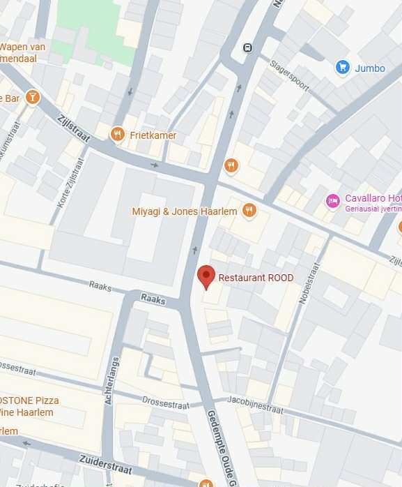

Rood is a pizzeria-style venue.
Offeriing a relaxed atmosphere where dogs are welcomed.
Menu
At Rood you can expect refined dishes with a playful twist - French elegance meets Asian freshiness.
Start with light bites like salmon tartare, scallops, or pumpkin gyoza. For mains, choose from tender
steak, slow-cooked pork belly, fresh sea bass, or spiced vegeterian eggplant. To share, there are
oysters, artisan snacks, and sides.
End you evening with a sweet panna cotta, millefeulle, or cheese trolley. Feeling adventurous?
Let the chef surprise you with a multi-course tasting menu.
Location
Rood
Gedempte Oude Gracht 11, 2011 GK Haarlem

If you wish to book a table, visit their site or give them a call: